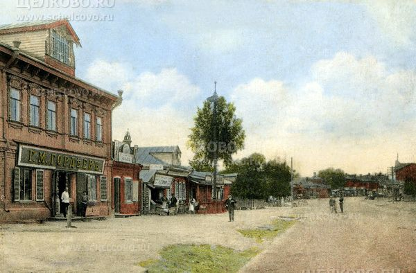
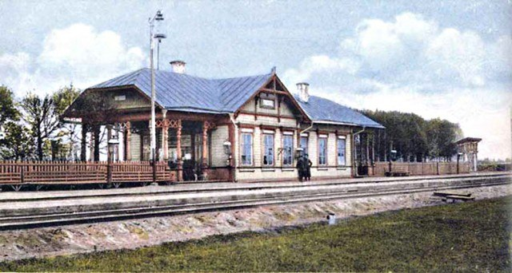
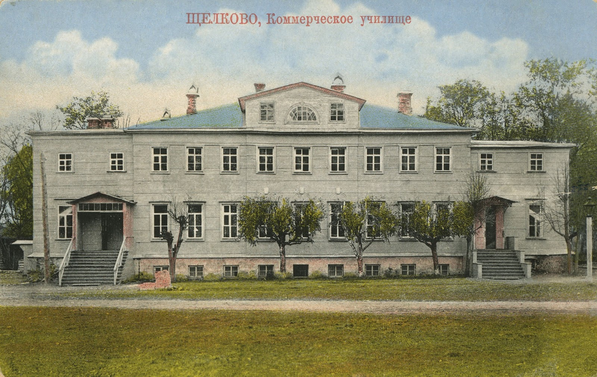

Администрация городского округа Щёлково
ОБЩИЕ СВЕДЕНИЯ
Городской округ Щёлково Московской области — это российский регион с богатым культурным наследием, хорошо развитой промышленностью и сельским хозяйством,
с мощной научной базой и квалифицированными кадрами.
ИСТОРИЯ РАЙОНА

Первые сведения о Щёлкове относятся к 1521—22 годам. Щёлково принадлежало И.Ф. Хомутову и по его завещанию передавалось Троице-Сергиевой лавре. В 1584 году деревня Щёлково значится в числе одного из 46 селений, которые составляли село Гребнево, принадлежавшее сподвижнику Ивана Грозного окольничему Б.Я. Бельскому, происходившему из родовых дворян.
Щёлково имело тогда 32 десятины земельных угодий, из которых обрабатывалось только 12 десятин.
В XVII и XVIII веках происходил процесс укрепления селений и концентрация населения. В середине XVIII века село Гребнево составляло сеть деревень: Щёлково, Фрязино, Чижово, Новая, Трубино, Назимиха, Слобода и село Топорково. В них насчитывалось 220 дворов, в которых проживало 1269 человек (из них мужчин 622). Само Гребнево в то время не имело крестьянских дворов. Указ 1769 года разрешил крестьянам заниматься промышленной деятельностью. 8 декабря того же года 15 гребневских крепостных, первыми в России, получили в мануфактур-коллегии право на производство «разных шелковых материй и платков». Так в России появилось одно из самых ранних и крупных гнезд кустарного шелкоткачества. Среди 15 гребневцев, получивших право заниматься производством шелковых тканей, 12 были из Щёлкова. В деревне, насчитывавшей 27 дворов, в которых проживало 153 человека (мужчин 79), появилось 33 шелкоткацких стана. В 1797 году в Щёлкове было уже 8 крестьянских шелкоткацких заведений, которые имели 100 станов и столько же рабочих (среди них 98 — вольнонаемные). В конце XVIII века в Щёлкове и округе
было сосредоточено 63% губернского крестьянского промышленного производства, 71% — уездного.
Но были в щёлковском крае не только крестьянские предприятия. В селе Фрянове (впервые упоминается в Писцовых книгах XVI века) функционировала дворянская посессионная щелкоткацкая мануфактура, на которой были заняты сотни рабочих. Промышленное производство в Щёлкове и округе по объему производимой продукции в ценностном выражении явно преобладало над сельскохозяйственными.
Для населения многих сел и деревень промышленный труд становился главным источником существования.
В начале XIX века, в условиях обострения русско-французских отношений,
шелкоткацкая крестьянская промышленность, получавшая сырье из Франции и Италии, приходит в упадок.
Но после разгрома французов снова набирает силы. Кустарно-промысловое заведение М.К. Кондрашева,
основанное одним из трех братьев Кондратьевых и переведенное в Щёлково в 1784 году, становится
по сути фабрикой. Мануфактуру Кондрашева называли первостатейной в шелковой промышленности, а Щёлковскую округу сравнивали с центром французской шелковой промышленности — Лионским округом. В 1827 и 1829 годах продукция фабрики удостаивалась золотых медалей, в 1835 году — большой золотой мануфактурной медали, а в 1841 — медали Варшавской мануфактурной выставки.

В 1832 году прусский подданный, выходец из г. Эльберфельда, Людвиг Рабенек, купил у помещицы Дурново часть сельца Соболева в излучине р. Клязьмы (на правобережье) и через год основал здесь, с разрешения царского правительства, первое в России пряжекрасильное заведение. При сыновьях Рабенека оно разрослось и стало одним из крупнейших в губернии. Ныне это широко известный Щёлковский хлопчатобумажный комбинат имени М.И. Калинина. Уже в ближайшие десятилетия после основания,
предприятие Рабенеков с прилегающей территорией органически слилось со Щёлковом.
В 30-е годы XIX века в Соболеве же, ближе к Щёлкову, Э.Ф. Кенеманом была основана крупная суконная фабрика. Одновременно значительно выросла шелкоткацкая фабрика богородского купца Н.И. Лаптева, занимавшая небольшой свободный участок земли в с. Хомутове. В 30-х годах в д. Щёлково возникают крупные шелкоткацкие предприятия купцов И.Я. Веснина и А.П. Крюкова. В 1843 году их было семь, работало на них 2 846 человек. Таким образом, в д. Щёлково и ее ближайшей округе (в радиусе не более 2 км) рабочих было больше, чем в Подольском, Коломенском и Звенигородском уездах. Рядом с корпусами кондрашовской фабрики на правом берегу Клязьмы стали появляться торговые лавки, мастерские сапожников, портных, жилые дома. В 1846 году совсем рядом на том же правом берегу Клязьмы, но ниже по течению, И.В. Четвериков построил фабричные корпуса, куда перевел свою московскую суконную фабрику. Это обстоятельство ускорило заселение правобережья Клязьмы. Здесь, рядом с д. Щёлково, появилась слобода. Официального названия у слободы не было. В документах она встречается как Мещанская слобода, просто Щёлково, посад Щёлково, поселок Щёлково, Щёлково Осеевской волости
(в отличие от д. Щёлково, находившейся в Гребневской волости того же Богородского уезда).
В 1859 году в Мещанской слободе насчитывалось 40 домовладений и 317 жителей. Стали происходить изменения и в организационной системе предприятий. Фабрика братьев Рабенек в 1879 году была реорганизована на основе акционерного Права — возникло Товарищество мануфактур Людвиг Рабенек (внуки основателя фабрики дали товариществу имя дяди). Фабрика Полякова была также реорганизована в 1894 году и стала называться Товариществом красильно-аппретурной фабрики в д. Щёлково (ныне это известная фабрика технических тканей). Широкое развитие промышленности предъявляло большие требования к транспорту. В конце XIX века вошла в строй Щёлковская ветка Северной железной дороги. В связи с постройкой железной дороги Александров—Иваново стало невыгодным содержать Стромынскую дорогу от Анискина и далее ради одной Фряновской фабрики. В 1897 году был построен Новохомутовский тракт Фряново—Назимиха—Гребнево—Слобода—Анискино с выходом на Стромынскую дорогу.

Щёлково после победы Советской власти становится административным центром, объединившим бывшие волости Богородского уезда — Осеевскую, Гребневскую, Ивановскую и Аксеновскую. Щёлково делало крупные успехи и в культурном строительстве, число учащихся бурно росло. В районе было 36 школ, в них работало 113 учителей и училось 4 082 учащихся. Было зарегестрировано 3 тыс. неграмотных. Для взрослых открыли 8 школ, в которых занималось 450 человек. Продолжало функционировать бывшее коммерческое училище, реорганизованное затем в школу II-й ступени, специальные промышленно-экономические курсы, — при нем готовили счетоводов, статистиков, регистраторов, счетных конторщиков. Был открыт торфяной техникум.
По окончании гражданской войны Щёлковский район, будучи почти в 4 раза больше по территории и по количеству жителей, чем обычная волость, в правовом, финансовом, бюджетном, хозяйственном отношениях находился на положении волости. Это вызывало осложнения в управлении. Постановлением Московского уездного Совета рабочих, крестьянских и красноармейских депутатов от 21 мая 1923 года Щёлкову был присвоен статус поселка городского типа. На 1 сентября 1923 года в Щёлковской волости числились 71 населенный пункт, 3 880 дворов и 33 441 житель, в поселке Щёлково — 203 двора и 9 944 жителя, в д. Щёлково — 130 дворов и 594 жителя. 17 августа 1925 года поселок Щёлково был отнесен к категории городов. В состав города были включены правобережное Щёлково (до революции Мещанская слобода), часть д. Щёлково с красильно-аппретурной фабрикой, Соболево и часть села Хомутово с шелкоткацкой фабрикой.
С первых дней Великой Отечественной войны трудящиеся города Щёлкова встали на боевую вахту. В городе сформировались истребительный батальон и батальон народного ополчения, который влился в состав 3-го полка 4-й Московской дивизии народного ополчения Куйбышевского района. В составе дивизии щёлковцы участвовали в битве под Боровском, в боях за Верею и Вязьму, в освобождении Белорусии, в штурме Кенигсберга и Пиллау. Многие жители Щёлковского района за проявленные в Великой Отечественной войне героизм и мужество были удостоены правительственных наград. Звание Героя Советского Союза присвоено А.Г. Дудкину, И.И. Иванову, Б.В. Михалеву, П.Т. Мужецкому, Н.Н. Тявкину и П.И. Цыганову.
В настоящее время г. Щёлково — центр одного из крупнейших в Подмосковье промышленных районов. Укрепляется материально-техническая база здравоохранения, образования и культуры, проводятся мероприятия по улучшению условий труда и отдыха жителей города, дальнейшему развитию физической культуры и спорта. Повышается материальное благосостояние жителей, увеличиваются масштабы социального и культурного строительства.
Проводится большая работа по застройке и реконструкции города. Старшее поколение щёлковцев помнит свой город еще одноэтажным. Ныне Щёлково — современный благоустроенный город.